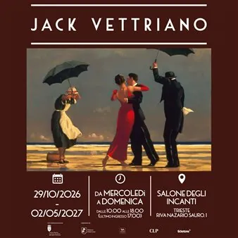

da gio 29 ott a dom 2 mag
Jack Vettriano - Mostra
Dopo l’incredibile successo delle prime tre tappe di Bologna, Milano e Roma, che hanno registrato oltre 80.000 visitatori, la straordinaria mostra dedicata a Jack Vettriano arriva a Trieste. L’esposizione intende celebrare la produzione artistica di Jack Vettriano (Fife, 17…
 Indicazioni
Indicazioni
- Costi e prenotazioni
- Costo non indicato · Prenotazione non indicata
- Programma
- Programma da verificare. Apri la fonte ufficiale per orari e possibili aggiornamenti.
- In caso di maltempo
- Nessuna indicazione specifica pubblicata.
- Note
- Acquisito automaticamente dalla fonte.
L’EVENTO
Descrizione completa
Dopo l’incredibile successo delle prime tre tappe di Bologna, Milano e Roma, che hanno registrato oltre 80.000 visitatori, la straordinaria mostra dedicata a Jack Vettriano arriva a Trieste. L’esposizione intende celebrare la produzione artistica di Jack Vettriano (Fife, 17 novembre 1951 – Nizza, 1° marzo 2025), tra i pittori più amati e riconosciuti dal pubblico italiano e internazionale.
Dal 29 ottobre 2026 al 2 maggio 2027, la suggestiva cornice del Salone degli Incanti , in Riva Nazario Sauro 1, ospiterà un’ampia selezione di opere che ripercorrono la storia e la straordinaria carriera del pittore, recentemente scomparso. Il pubblico avrà l’opportunità di approfondire la conoscenza di uno degli artisti più venduti e riprodotti di tutti i tempi attraverso un percorso espositivo composto da oltre ottanta opere: otto dipinti a olio, una selezione di opere su carta museale a tiratura unica, realizzate appositamente per la mostra, un contributo video dedicato all’artista e suggestivi scatti ambientati nello studio di Jack Vettriano, realizzati da Francesco Guidicini, celebre ritrattista del Sunday Times , le cui fotografie sono conservate presso la National Portrait Gallery di Londra.
L’esposizione è promossa dal Comune di Trieste e organizzata da Chiara Campagnoli, Deborah Petroni e Rubens Fogacci di Pallavicini S.r.l ., ed è stata resa possibile grazie alla compartecipazione dell’amministrazione comunale. Come nelle precedenti edizioni, il progetto si avvale dell’importante partnership con Jack Vettriano Publishing , che continua a sostenere il tour italiano. La presentazione ai media è affidata al dott. Pietro Franca , mentre i testi curatoriali sono a cura della dott.ssa Francesca Bogliolo.
Salone degli Incanti (Riva Nazario Sauro, 1)
Dal 29 ottobre 2026 al 2 maggio 2027
Dal mercoledì alla domenica; dalle 10:00 alle 18:00 (ultimo ingresso ore 17:00)
Il biglietto ridotto Euro 13,00 possessori FVG Card sarà acquistabile presso la biglietteria.
IL PROGRAMMA
Programma e orari
Appuntamenti raccolti dalle fonti elencate. Dove manca un orario, non è ancora disponibile in questa scheda.
Programma pubblicato
- Dal 2026-10-29 al 2027-05-02
INFORMAZIONI UTILI
Prima di partire
- Controllare la fonte prima di partire.
ORGANIZZAZIONE